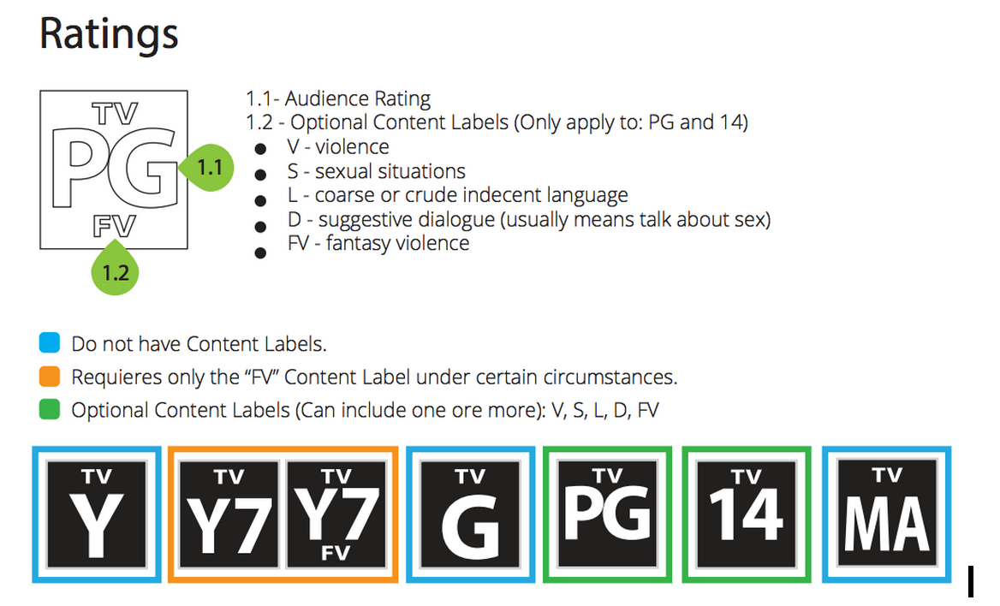

Per the FCC guidelines for TV ratings, you can now apply the TV rating watermark to your videos. TV ratings are applied at the asset level, and each asset can only have one TV rating. The TV rating watermark appears when the video starts playing and appears again when the video resumes after ad playback.
To apply ratings to an asset apply the rating specific metadata to the asset in the Backlot user interface using the steps described in Adding Custom Metadata. The required metadata is described in TV Ratings Backlot Metadata Configurations.
When applied to an asset, the rating watermark does not appear during associated ad playbacks.
This feature is compatible with Android 2.3 and newer devices. If you do not need to use this feature no configuration is required. The feature is set to off by default.